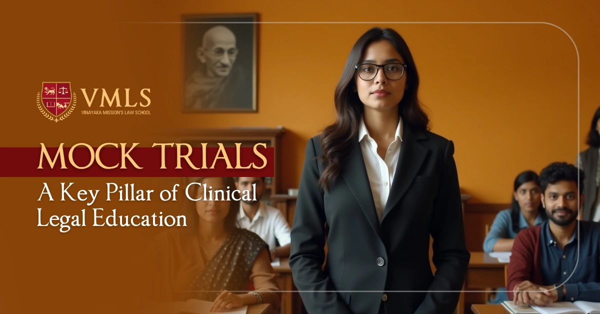

June 9, 2025
0 Views

The purpose of legal education is to create well-versed and proficient individuals who can render the best legal service to the people and help them get justice. It is also to produce law-abiding and well-informed citizens who can carry out their duties in their professional life (irrespective of the nature of profession) for maintaining the rule of law. Along with a robust foundation of substantive law, students must also be oriented to the application of law during their undergraduate legal programme. In this regard, the importance and the value of mooting in the life of a law student cannot be over-emphasised for a simple reason that the skills that are required to excel in this activity are very much akin to the skills that a lawyer requires to prosper, in not just the litigation practice, but in other legal practice areas as well.
Mooting or a mock trial is basically nothing but a clinical exercise for stimulation, in which a student is groomed for future legal practices whether for law firms or in litigation or in judiciary. Law schools are simmering with competition as more and more young minds gravitate towards careers in law. In such an environment, mooting is of utmost importance. Not only does it provide students with a break from classroom learning, but it also gives them opportunities to learn and grow.
Mooting develops in students the essential skills of researching, developing innovative lines of argument in consonance with the law, drafting and withstanding the questioning of seasoned and learned judges, which they are bound to face in their future, no matter what line they eventually tend to tow. Mooting skills go a long way in transforming students into effective lawyers. Participating in moot courts, which are organized in various law schools in Chennai and all throughout the country, is an irreplaceable part of one’s experience as a law student. Moot courts develop the requisite confidence to appear before a judge in litigation. Although many would say that participating in moot court competitions is not a true depiction of how a real court operates, but going up to the podium and presenting your arguments in front of seasoned judges and legal professionals is the closest law students can get to the real-life court proceedings. Mooting not only hones one’s advocacy skills but also facilitates overcoming stage fear, builds self-confidence and develops public speaking and interpersonal skills. Mooting teaches young law students to think like a lawyer.
There is no activity in a law school which is as important as mooting, especially if one wishes to join litigation. To break down the entire process of mooting, from day one till the end of the completion, one has to submerge in the moot proposition or problem in hand so much so that he/she is completely thorough with the facts of the case. Unless this doesn’t happen, one will not be in a position to cull out the legal issues and controversies involved. This is followed by a robust research work on the legal issues identified. The entire team which is generally comprised of three students must make earnest and synchronised efforts in the research and the legal issues identified may be divided amongst the team members. Research should be thorough and broad-enough to ensure that none of facets of the legal controversies involved are missed out. Lastly, team efforts are required to win a moot court competition and hence, the team members must be honest and modest in choosing their roles in the team.
A robust mooting culture is quintessential to any good undergraduate law programme. Through various workshops and training on court mannerisms, etiquettes, how to draft a memorial, students get equipped with the necessary arsenal to participate in moot court competitions. Therefore, faculty members must give it a serious thought to add a component of mooting as a part of their assessments as this holistic exercise cultivates a strong sense of determination and dedication among students.

5-Year Law Programme at VMLS
Jan 08, 2025Several students across India are choosing law as a career due to the various benefits it offers.

3-Year LLB Programme at VMLS
Jan 07, 2025The 3-year LLB (Bachelor of Legislative Law) programme is an undergraduate programme designed to cater...

VMRF Law Aptitude Test (VLAT): A Complete Guide
Dec 30, 2024Vinayak Mission's Law School (VMLS) is one of the best law schools in India and is being mentored by O. P. Jindal Global...

Top Law Colleges in India
Dec 23, 2024In India, law is seen as a noble career option, and the number of students interested in pursuing law is increasing.

Subjects in Law Courses
Dec 18, 2024If you are willing to work in a legal advisory firm, judiciary, or as a lawyer, then pursuing a law degree plays...

CLAT Exam Importance, Eligibility, Criteria and Syllabus
Dec 17, 2024CLAT is a national-level entrance exam, and it stands for Common Law Entrance Test. Many top law universities in India.